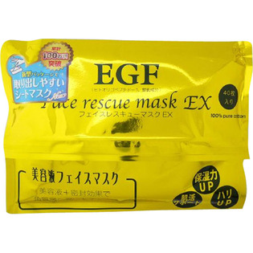

返回列表
产品名称：EGFフェイスレスキューマスクEX

カタセ EGFフェイスレスキューマスクEX ４０枚
メーカー カタセ
JANコード 4571241290902
商品の特徴
美容液フェイスマスクです。
- 成分・分量
- 水、グリセリン、DPG、エタノール、BG、ヒトオリゴペプチド-1、ヒアルロン酸Na、ポリグルタミン酸、ダイズ種子エキス、アルブチン、レシチン、ダイズ油、アラントイン、キサンタンガム、ポリソルベート80、クエン酸、クエン酸Na、フェノキシエタノール、メチルパラベン
- 用法及び用量
- 洗顔後の清潔なお肌にご使用ください。袋を開けてマスクシートを上から一枚ずつ取り出してお顔にのせます。マスクの目と口の部分をフィットさせて、そのまま10分-15分程度おいてからはがしてください。その後は普段通りのお手入れをしてください。残った液は洗い流さずによくなじませてください。